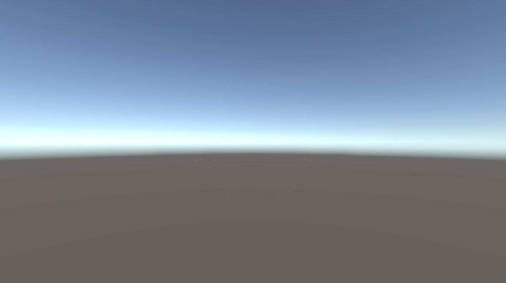
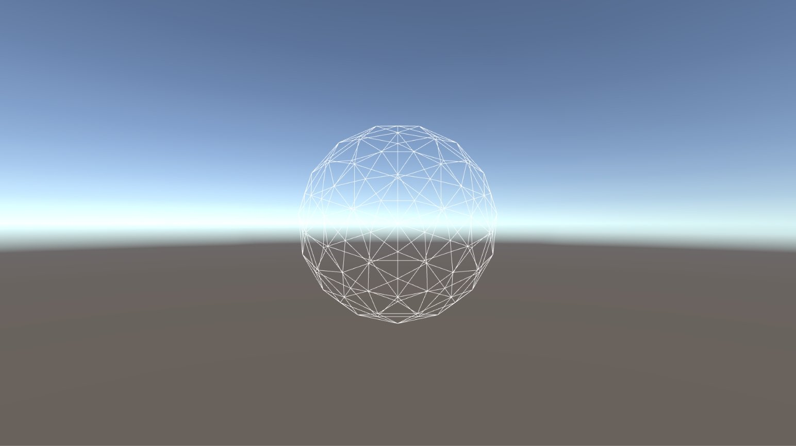
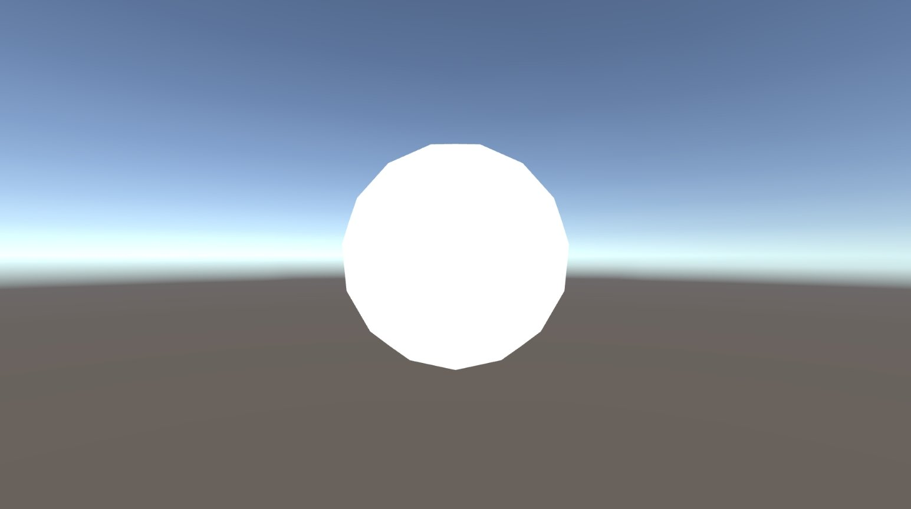
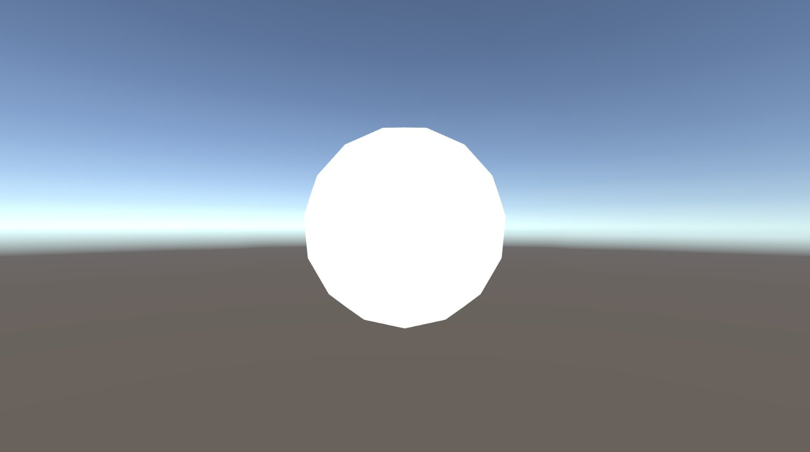
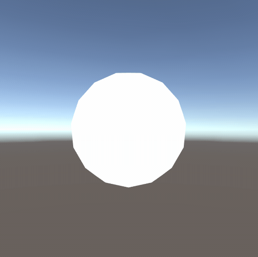
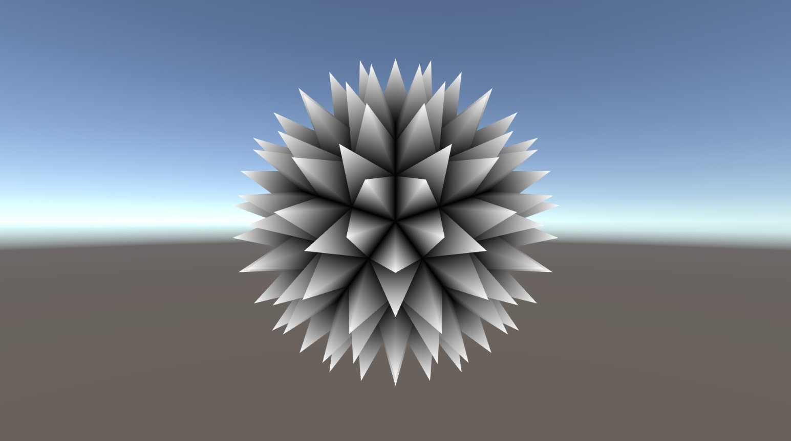
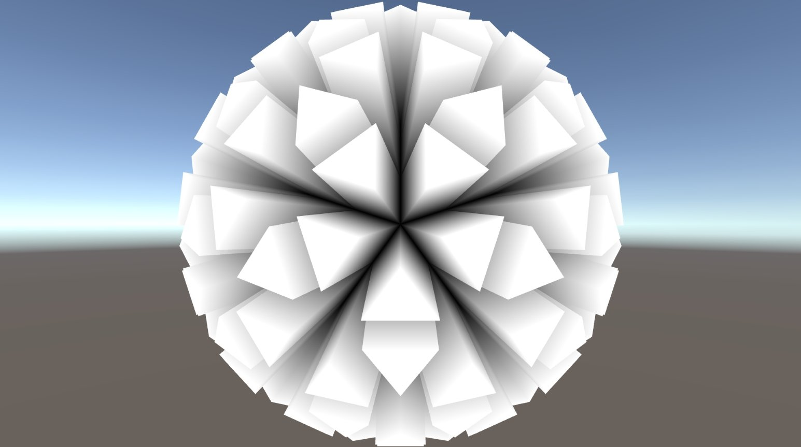

常見的可編程 Shader 有 Vertex Shader 及 Fragment Shader，而 Shader Model 4.0 及 OpenGL 3.2 開始引入了 Geometry Shader 幾何著色器。
用這篇文章來記錄如何在 Unity 中實作 Geometry Shader。
Rendering Pipeline 中執行順序依次為 Vertex Shader、Geometry Shader 及 Fragment Shader。
Vertex Shader
負責逐頂點處理，由於數入的單位是單一頂點，所以無法取得鄰近點、線、面的資料，而 Geometry Shader 就是用來處理這些資料之間的關係。
Geometry Shader
負責圖元 (Primitive) 處理，不但能夠取得點、線、面之間的關係，還能進行新增及刪減的動作。
Fragment Shader
負責逐像素處理，將經過 Rasterisation 後的像素進行計算。
#pragma geometry geom//由應用階段到 Vertex Shader 的資料結構
struct a2v
{
float4 vertex : POSITION;
float2 uv : TEXCOORD0;
};
//由 Vertex Shader 到 Geometry Shader 的資料結構
struct v2g
{
float4 vertex : POSITION;
float2 uv : TEXCOORD0;
};
//由 Geometry Shader 到 Fragment Shader 的資料結構
struct g2f
{
float4 vertex : SV_POSITION;
float2 uv : TEXCOORD0;
};[maxvertexcount(3)]
void geom(triangle v2g input[3], inout TriangleStream<g2f> outStream)
{
g2f o;
for(int i = 0; i < 3; i++)
{
o.vertex = UnityObjectToClipPos(input[i].vertex);
o.uv = input[i].uv;
outStream.Append(o);
}
outStream.RestartStrip();
}屬性
maxvertexcount(number) //設定 Geometry Shader 的最大輸出頂點數輸入
point //點圖元資料
line //線圖元資料
lineadj //線圖元資料，包含鄰近線圖元資料
triangle //面圖元資料
triangleadj //面圖元資料，包含鄰近面圖元資料輸出
PointStream //點 Stream 資料
LineStream //線 Stream 資料
TriangleStream //面 Stream 資料Stream 方法
Append(struct) //新增 Stream 資料
RestartStrip() //使用 TriangleStream 時，需要使用這個方法形成面圖元資料（三點為一面）PointStream/Vertex

LineStream/Line

TriangleStream/DoNothing

TriangleStream/ExtrudeVertex

TriangleStream/TriangleAnimation

TriangleStream/ExtrudePyramid

TriangleStream/ExtrudePyramidAnimation
TriangleStream/ExtrudeTriangle

TriangleStream/ExtrudeTriangleAnimation
ted10401/GeometryShaderCookbook
keijiro/StandardGeometryShader
幾何著色器 (Geometry Shader) | 逍遙文工作室
Unity3D Geomerty Shader – 苍白的茧